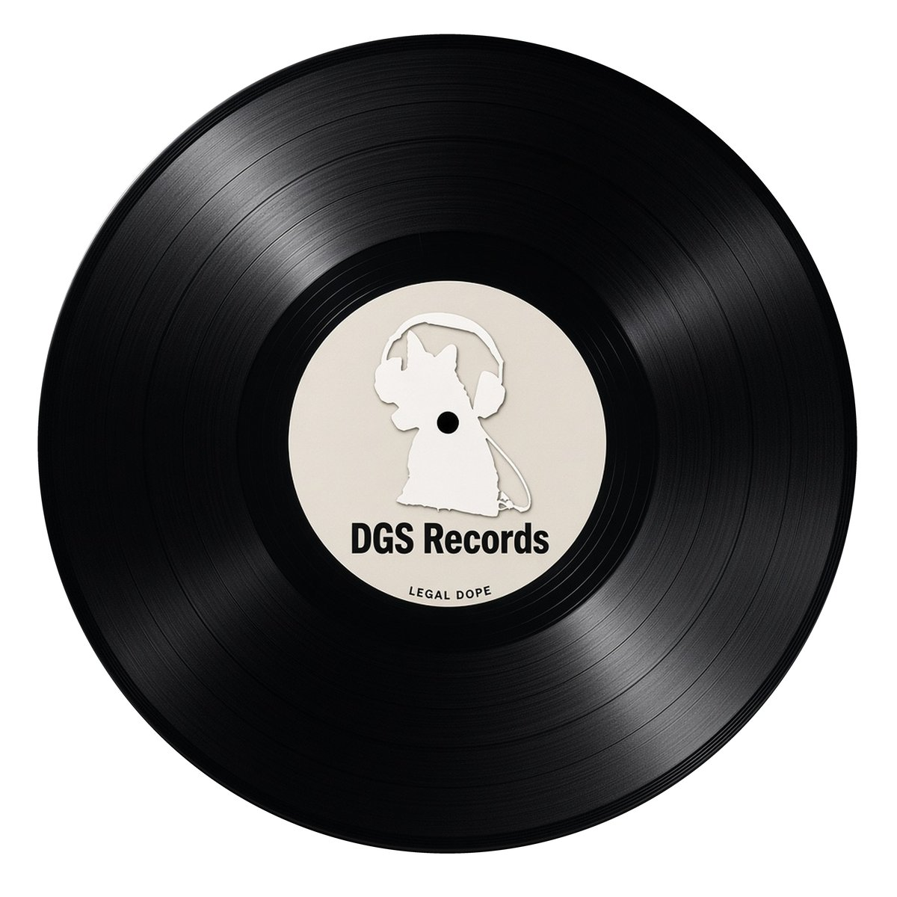

Compilation · coming
Legal Dope
DGS Records owns the masters. New DJ Dogcon songs open the set; label and SoundCloud-credited cuts follow.

Compilation · coming
DGS Records owns the masters. New DJ Dogcon songs open the set; label and SoundCloud-credited cuts follow.
Titles marked proposed are working names from the new DJ Dogcon songs, pending final confirmation. The Siri skit is left off. One short piece is held pending a final keep/drop call.
Visuals AI-generated · Music 100% human-made by the credited artists